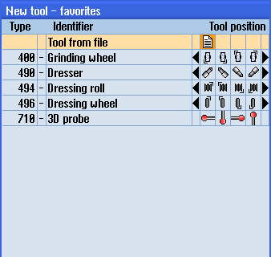

If, in the tool list settings, the "Permit tool in/out file" option is activated, then an additional entry is available in the list of favorites.

New tool from file in the list of favorites
Creating a new tool from file
| | 1. | The tool list is opened. |
| | 2. | Place the cursor in the tool list at the position where the new tool should be created. To do this, you can select an empty magazine location or the NC tool memory outside of the magazine. You may also position the cursor on an existing tool in the area of the NC tool memory. Data from the displayed tool will not be overwritten. |
 | 3. | Press the "New tool" softkey. |
 | | The "New Tool - Favorites" window is opened. |
 | 4. | Position the cursor on the entry "Tool from file" and press the "OK" softkey. The "Load tool data" window opens. |
| | 5. | Navigate to the required file and press the "OK" softkey. The tool data is read from the file and is displayed in the "New tool from file" window with the tool type, tool name and possibly with certain parameters. |
| | 6. | Press the "OK" softkey. The tool is added to the tool list with the specified name. If the cursor is located on an empty magazine location in the tool list, then the tool is loaded to this magazine location. |
The tool creation sequence can be defined differently.
Unloading a tool in a file
| | 1. | The tool list is opened. |
 | 2. | Place the cursor on the tool that you would like to unload from the magazine and press the "Unload" and "In file" softkeys. |
| | 3. | Navigate to the required directory and press the "OK" softkey. |
| | 4. | Enter the required file name in the "Name" field and press the "OK" softkey. The field is preassigned with the tool names The tool is unloaded and the data of the tool are written to the file. |
According to the corresponding setting, after having been read out, the unloaded tool is deleted from the NC memory.
Deleting a tool in a file
| | 1. | The tool list is opened. |
| | 2. | Position the cursor on the tool that you wish to delete. |
 | 3. | Press the "Delete tool" and "In file" softkeys. |
| | 3. | Navigate to the required directory and press the "OK" softkey. |
| | 4. | Enter the required file name in the "Name" field and press the "OK" softkey. The field is preassigned with the tool names The tool is unloaded and the data of the tool are written to the file. The tool is then deleted from the NC memory. |